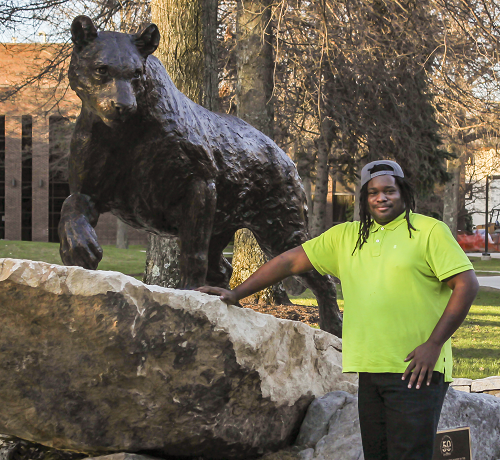

Learn a little bit about me!
Hello, my name is Josiah Bennett and I love technology! Technology isn't only my carrer it is my passion. I graduated from the University of Pittsburgh at Bradford with a Bachelors of Science degree in Computer Information Systems and Technology. In my free time I experiment with different technologies and programming languages. One of my favorite projects that I am currently maintaining is a Windows Server 2008 R2 domain. Every computer in my parents house is connected and managed through the domain. There are also file servers that are used to manage storage for the house. Within the domain I also run virtual DNS and DHCP servers. If you'd like to learn more about me please feel free to ask